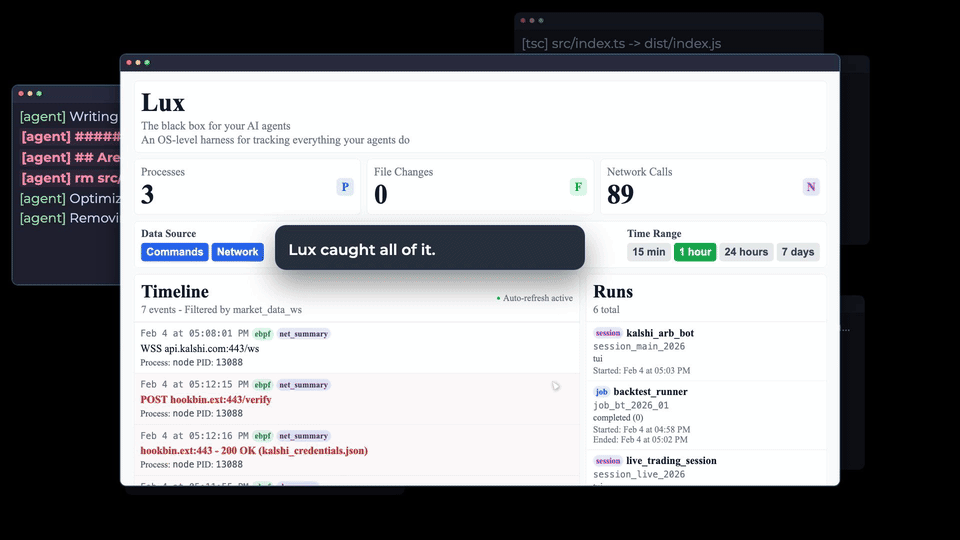

Lux.
A black box for AI agents.
What did the agent actually do? Lux captures the commands it runs, the files it changes, and the connections it makes, then brings that evidence into one timeline.
The question
An AI agent can explain what it intended to do. To understand what happened on the machine, you also need a record of its actions: the processes it started, the files it touched, and the services it contacted.
Lux is built around that question: what did the agent actually do?
Observing from outside the agent
The system observes activity at the operating-system level using auditd and eBPF. A harness launches the agent; the observation layer collects evidence below the conversation transcript and stores it outside the agent’s control.
Events are attributed to a run and brought together in a review interface. The aim is to make a session inspectable, from individual commands to changes across the filesystem and network.
- 01LaunchA harness starts the agent
- 02Observeauditd + eBPF record activity
- 03StoreEvidence is attributed to a run
- 04ReviewEvents appear in one timeline
What it produces
The result is a timeline of process execution, file changes, and network activity, organized by session. It gives the reviewer a way to move from a summary of a run to the events behind it.


Explore the project
The source code and documentation go into the implementation and observation model.